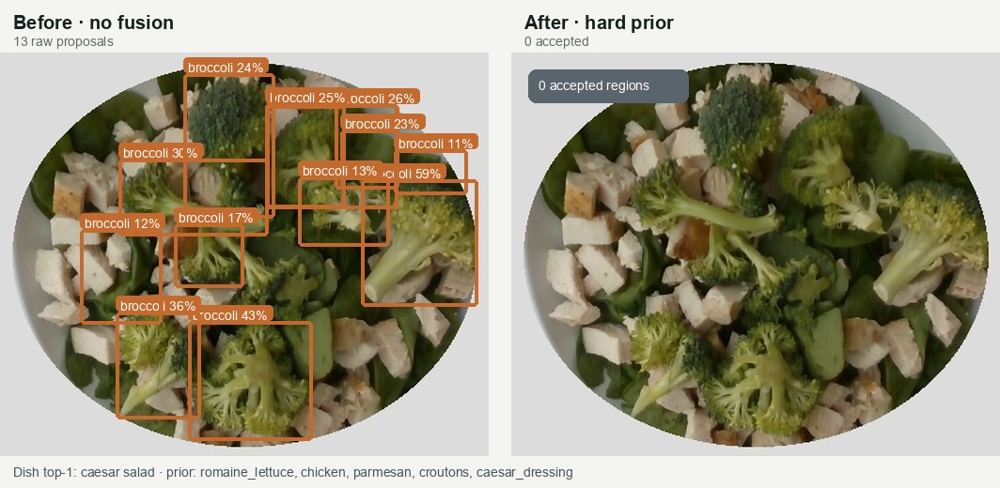
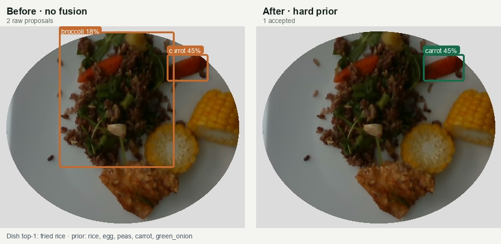
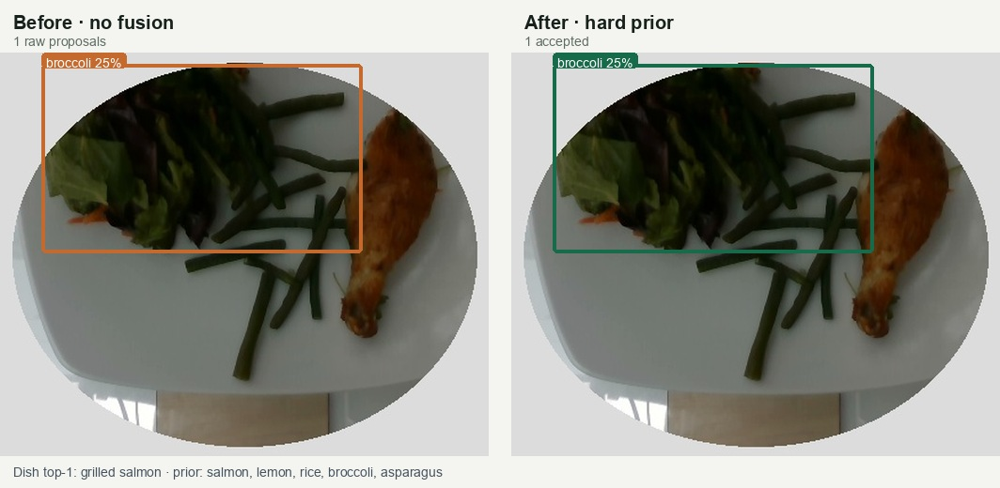
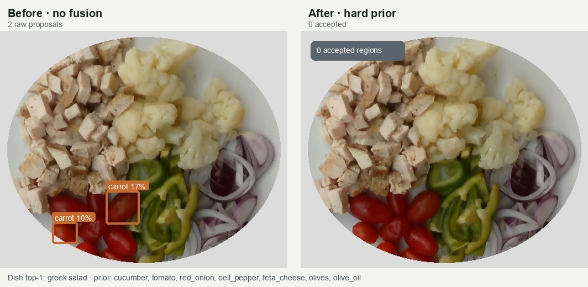
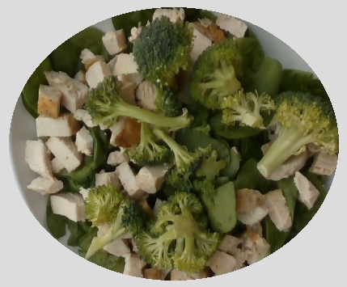
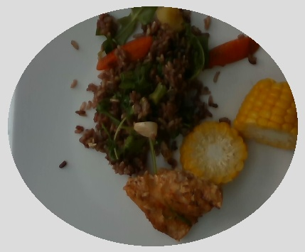
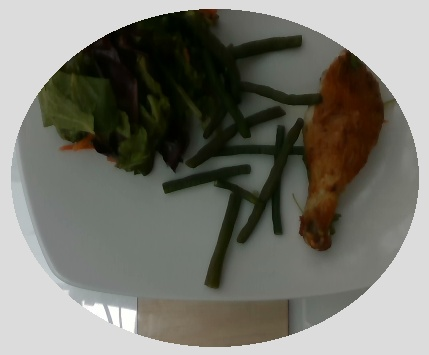
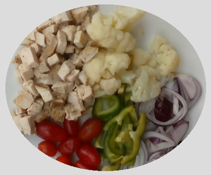

Keep the visual channel intact.
Every filtered proposal remains available for review after confidence filtering, per-label NMS, and the 16-region cap.
The current hard dish-prior gate made the output smaller, but this controlled comparison did not show a detection improvement over the raw visual proposals.

Same 100 images, same ONNX assets, same thresholds.
Metrics use recipe-level ingredient metadata as a weak proxy and score only the five labels supported by this PoC: apple, banana, broccoli, carrot, and orange.
The two arms differ in one policy decision: whether the dish classifier is allowed to remove a detector proposal from the accepted result.
Every filtered proposal remains available for review after confidence filtering, per-label NMS, and the 16-region cap.
If the top-1 dish prior does not contain the proposal label, the region is removed from the accepted result. Rejected proposals remain only in debug output.
Weak proxy; directional evidence, not production truth.
Orange = raw proposal · green = accepted after fusion.
Dish prior: romaine, chicken, parmesan, croutons, dressing. The visual detector proposes broccoli; the hard gate deletes every region.

Dish prior: rice, egg, peas, carrot, green onion. The prior keeps carrot and removes broccoli. This is the intended filtering behavior, but it is not enough to improve the aggregate score.

Dish prior: salmon, lemon, rice, broccoli, asparagus. Because broccoli is listed, fusion leaves the proposal unchanged.

Dish prior: cucumber, tomato, onion, pepper, feta, olives. Carrot is not in the prior, so both raw proposals disappear from the accepted result.




| Strategy | Regions | Images with regions | Weak precision | Weak recall | Weak F1 |
|---|---|---|---|---|---|
| No fusion | 200 | 69 / 100 | 16.84% | 48.48% | 25.00% |
| Hard top-1 prior | 153 | 54 / 100 | 15.79% | 36.36% | 22.02% |
| Delta | −47 | −15 | −1.05 pp | −12.12 pp | −2.98 pp |
Dataset provenance: official Nutrition5k repository. Full machine-readable output: comparison.json.
The next experiment should preserve visual evidence and test whether a soft or top-k prior can improve ranking without turning dish expectation into ingredient proof.